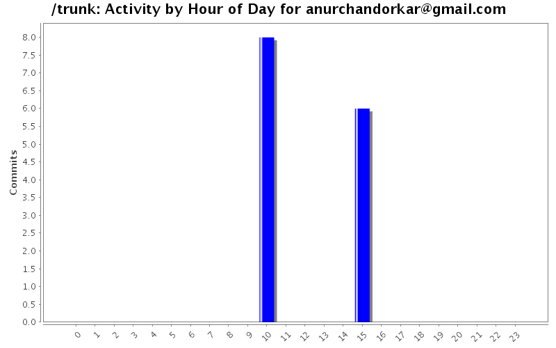
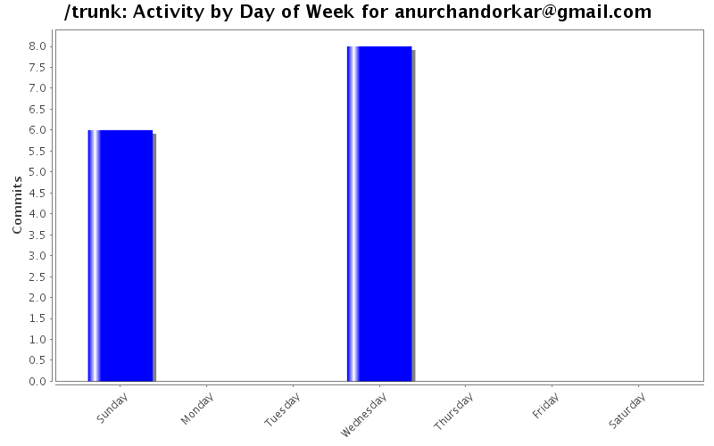

| Directory | Changes | Lines of Code | Lines per Change |
|---|---|---|---|
| Totals | 14 (100.0%) | 358 (100.0%) | 25.5 |
| omnidroid/src/edu/nyu/cs/omnidroid/core/ | 4 (28.6%) | 196 (54.7%) | 49.0 |
| omnidroid/src/edu/nyu/cs/omnidroid/external/actions/ | 3 (21.4%) | 118 (33.0%) | 39.3 |
| omnidroid/src/edu/nyu/cs/omnidroid/model/ | 4 (28.6%) | 38 (10.6%) | 9.5 |
| omnidroid/ | 2 (14.3%) | 6 (1.7%) | 3.0 |
| omnidroid/libs/ | 1 (7.1%) | 0 (0.0%) | 0.0 |

Added 3 actions. Set Phone loud, silent and vibrate
196 lines of code changed in 6 files:
Added Twitter Status Update Action
162 lines of code changed in 8 files: